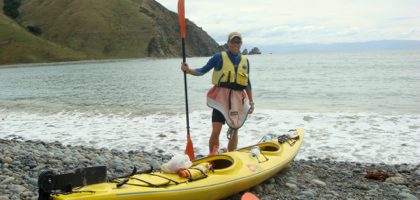
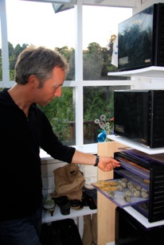
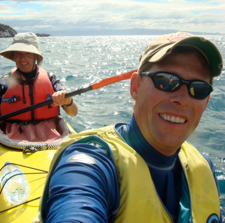
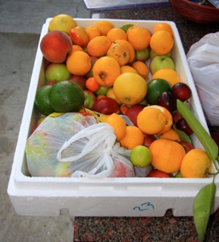

Nelson

Raw food og havkajak
lørdag den 16. februar 2008

Det er en underlig fornemmelse, pludselig at vågne i en rigtig seng, efter en måned i Camper. Men det er skønt! Jeg ligger og kigger ud på et af Ulriks mange æbletræer. Jeg kender Ulrik fra LiNKs (Leaders in The Knowledge Society), hvor jeg er med i deres Advisory Board og Ulrik fungerer som management coach. Men så godt kender vi nu heller ikke hinanden, så det er utrolig sødt af ham at tage imod os med åbne arme og lade os crashe og invadere hans dejlige hus. Ulrik sover selv oppe på bjerget i en lille hytte på et enorme stykke land, der hører til, og som vi senere skal vende tilbage til.

Efter et overdådigt morgenmåltid, tager vi ind på det store lørdagsmarked i Nelson, hvor der for alvor er gang i den. Her er kunsthåndværk og organic food i alle afskygninger. Stemningen er meget hyggelig, folk hilser og er meget smilende, der spilles musik og spises og hygges. Vi kommer til at tale om, hvor meget stemningen minder om Californien, men på en mindre spoleret måde.
Hjemme igen er det frokost tid, og igen står den på alle mulige delikatesser som virkelig udfordrer smagsløgene. Det er lidt for fremmedartet til Viola, men Stella guffer det hele i sig.

Området ved Nelson er perfekt til havkajak, så mens pigerne hviler sig, tager vi ud for at sejle en tur. Der er lidt sø, så vi låner en dobbeltkajak, som er mere stabil. Den oprindelige plan var at sejle rundt om Pepin Island, men pga tidevandet lader det sig ikke gøre, så vi ser hvor langt vi når. Der er en rimelig høj brænding og godt med bølger, men vejret er flot, og vi får en virkelig smuk tur. Vi sejler indenskærs hvor vi kan, og det når at kilde i maven et par gange, når vi går igennem helt smalle passager. men efter godt to timers sejlads er vi tilbage på stranden, godt ømme i ryg og skuldre - skønt!

Vi når et skønt Raw Food aftensmåltid mere, før vi falder trætte og meget meget mætte omkuld.
/Tim
Så er vi klar til en tur på havet. Der skal en del sikkerhedsudstyr med, da det ikke er helt ufarligt pga skærene og klipperne under vandet som man ikke altid kan se.